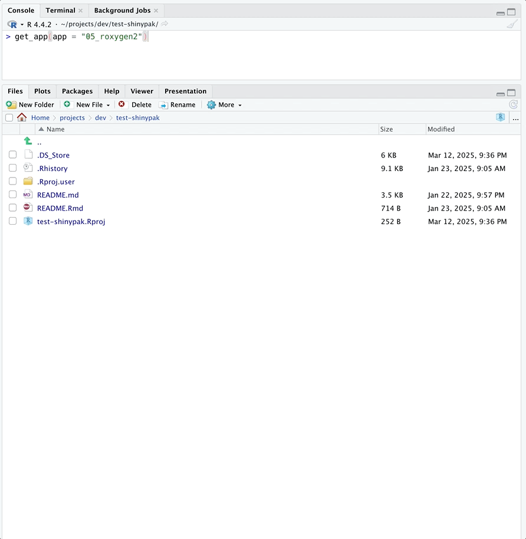

shinypak assumes you have GitHub and Posit
workbench synced. Read more about setting this up on the gert
package website
“In
gert, authentication is done automatically using thecredentialspackage. This package calls out to the local OS credential store which is also used by the git command line. Therefore gert will automatically pick up on https credentials that are safely stored in your OS keychain.”
List all apps
The apps are stored in branches on the moviesApp
repo:
list_apps()
#> branch last_updated
#> 2 01_whole-app-game 2024-01-17 19:30:27
#> 1 02.1_shiny-app 2024-01-17 19:35:35
#> 4 02.2_movies-app 2024-01-17 19:37:19
#> 5 02.3_proj-app 2024-01-17 19:39:28
#> 6 03.1_description 2024-01-17 19:40:11
#> 7 03.2_rproj 2024-01-17 19:41:14
#> 8 03.3_create-package 2024-01-17 19:42:45
#> 9 04_devtools 2024-01-17 19:44:38
#> 10 05_roxygen2 2024-01-17 19:45:34
#> 11 06.1_pkg-exports 2024-01-17 19:46:25
#> 12 06.2_pkg-imports 2024-01-17 19:47:55
#> 13 07_data 2024-01-18 18:17:13
#> 14 08_launch-app 2024-01-17 20:46:38
#> 15 09.1_inst-www 2024-01-17 20:47:20
#> 16 09.2_inst-bslib 2024-01-17 20:48:37
#> 17 09.3_inst-dev 2024-01-17 20:49:44
#> 18 09.4_inst-prod 2024-01-17 20:50:27
#> 19 11_tests-specs 2024-02-21 17:09:11
#> 20 12.1_tests-fixtures 2024-02-21 17:11:15
#> 21 12.2_tests-helpers 2024-02-21 17:12:29
#> 22 12.3_tests-snapshots 2024-02-21 17:31:28
#> 23 13_tests-modules 2024-02-21 17:33:30
#> 24 14_tests-system 2024-02-21 19:02:02
#> 25 15_docker 2024-02-15 15:21:03
#> 26 16.1_gha-style 2024-02-22 04:56:59
#> 27 16.2_gha-shiny 2024-02-22 05:39:17
#> 28 16.3_gha-docker 2024-02-22 06:51:38
#> 29 17_pkgdown 2024-02-28 11:51:46
#> 30 18.1_css-inline 2024-03-18 05:47:45
#> 31 18.2_css-internal 2024-03-18 18:54:15
#> 32 18.3_css-file 2024-03-18 21:20:11
#> 33 19_js 2024-03-19 05:04:14
#> 34 20_python 2024-02-15 13:17:30
#> 35 21_style 2024-02-15 14:57:11
#> 36 22_golem 2024-01-17 21:49:00
#> 37 23_leprechaun 2024-01-18 17:59:53
#> 38 24_rhino 2024-02-13 07:04:59
#> 39 25.0_debug-error 2024-02-13 11:29:39
#> 40 25.1_debug-selected_vars 2024-01-15 17:29:25
#> 41 25.2_debug-var_inputs 2024-01-15 17:25:12
#> 42 25.3_debug-scatter_plot 2024-01-15 17:21:58
#> 43 25.4_debug-print 2024-01-15 17:04:21
#> 44 26.1.0_reactive-values 2024-02-13 17:22:35
#> 45 26.1.1_step_01 2024-02-13 17:14:41
#> 46 26.1.2_step_02 2024-02-13 16:23:49
#> 47 26.1.3_step_03 2024-02-13 16:38:31
#> 48 26.1.4_step_04 2024-02-13 19:21:19
#> 49 26.2.0_user-data 2024-02-13 19:04:32
#> 50 26.2.1_step_01 2024-02-13 19:03:00
#> 51 26.2.2_step_02 2024-02-13 19:01:57
#> 52 27_stack-traces 2024-02-21 19:34:35
#> 53 28_dependency-hell 2024-02-21 19:36:47
#> 54 A.E_mocks-snapshots 2024-02-13 19:48:31You can also specify a regex to return a table of
branches matching a particular chapter or topic:
list_apps("12")
#> branch last_updated
#> 20 12.1_tests-fixtures 2024-02-21 17:11:15
#> 21 12.2_tests-helpers 2024-02-21 17:12:29
#> 22 12.3_tests-snapshots 2024-02-21 17:31:28
list_apps("tests")
#> branch last_updated
#> 19 11_tests-specs 2024-02-21 17:09:11
#> 20 12.1_tests-fixtures 2024-02-21 17:11:15
#> 21 12.2_tests-helpers 2024-02-21 17:12:29
#> 22 12.3_tests-snapshots 2024-02-21 17:31:28
#> 23 13_tests-modules 2024-02-21 17:33:30
#> 24 14_tests-system 2024-02-21 19:02:02Launch
To launch an app from the Shiny App-Packages
book, you can supply the name of the branch to
launch():
launch(app = "<branch>")Let’s start with one of the branches from the early chapters (not quite an app-package yet):
launch(app = "02.2_proj-app")
launch() will automatically download the application
files into a folder in the current working directory.
Helper
The is_r_package() function is useful for determining if
a directory contains an R package:
is_r_package("02.2_proj-app")If the branch is storing an app-package, launch() loads
the package and then launches the application:
launch(app = "09.2_inst-bslib")
We can set the verbose argument to TRUE
in is_r_package() to see the details on what is being
checked:
is_r_package("09.2_inst-bslib", verbose = TRUE)Get
launch() calls the get_app() function. If
you call get_app(), the specified branch and application
will be downloaded into the current working directory:
get_app(app = "14_tests-system")
You can open the new app project by supplying the
open = TRUE argument:
get_app(app = "14_tests-system", open = TRUE)
If the app is already downloaded, the files are updated with the latest commit to the branch.
Lookup Table
topic_lookup connects branch,
part, and chapter:
topic_lookup| branch | part | chapter |
|---|---|---|
| 01_whole-app-game | Intro | Whole app game |
| 02.1_shiny-app | Intro | Shiny |
| 02.2_movies-app | Intro | Shiny |
| 02.3_proj-app | Intro | Shiny |
| 03.1_description | Intro | Packages |
| 03.2_rproj | Intro | Packages |
| 03.3_create-package | Intro | Packages |
| 04_devtools | Intro | Development |
| 05_roxygen2 | App-packages | Documentation |
| 06.1_pkg-exports | App-packages | Dependencies |
| 06.2_pkg-imports | App-packages | Dependencies |
| 07_data | App-packages | Data |
| 08_launch-app | App-packages | Launch |
| 09.1_inst-www | App-packages | External files |
| 09.2_inst-bslib | App-packages | External files |
| 09.3_inst-dev | App-packages | External files |
| 09.4_inst-prod | App-packages | External files |
| 11_tests-specs | Tests | Specifications |
| 12.1_tests-fixtures | Tests | Test tools |
| 12.2_tests-helpers | Tests | Test tools |
| 13_tests-modules | Tests | Testing modules |
| 14_tests-system | Tests | System tests |
| 15_docker | Deploy | Docker |
| 16.1_cicd-style | Deploy | CI/CD |
| 16.2_cicd-shiny | Deploy | CI/CD |
| 16.3_cicd-docker | Deploy | CI/CD |
| 17_golem | Frameworks | golem |
| 18_leprechaun | Frameworks | leprechaun |
| 19_rhino | Frameworks | rhino |
| 20_css | Non-R Code | CSS |
| 21_js | Non-R Code | JavaScript |
| 22_python | Non-R Code | Python |
| 23.1_debug-error | Special Topics | Debugging |
| 23.2_debug-selected_vars | Special Topics | Debugging |
| 23.3_debug-var_inputs | Special Topics | Debugging |
| 23.4_debug-scatter_plot | Special Topics | Debugging |
| 23.5_debug-print | Special Topics | Debugging |
| 24.1.0_reactive-values | Special Topics | Values vs. data |
| 24.1.1_step_01 | Special Topics | Values vs. data |
| 24.1.2_step_02 | Special Topics | Values vs. data |
| 24.1.3_step_03 | Special Topics | Values vs. data |
| 24.1.4_step_04 | Special Topics | Values vs. data |
| 24.2_user-data | Special Topics | Values vs. data |
| 24.2.0_user-data | Special Topics | Values vs. data |
| 24.2.1_step_01 | Special Topics | Values vs. data |
| 24.2.2_step_02 | Special Topics | Values vs. data |
| A.E_mocks-snapshots | Appendix | Test mocks and snapshots |